2014/0330Sunメダカのように生き よう。559回目
アンダースペシャルライブ
詳細発表されました！
5月3日(土)
渋谷TSUTAYA O-EAST
12:00〜
15:00〜
18:00〜
ライブ3回！
5月17日(土)
ポートメッセ名古屋
19:00〜
全国握手会終了後
です！
素敵なライブにしたいな。
ぜひ応募してください！
よろしくお願いします。
.........
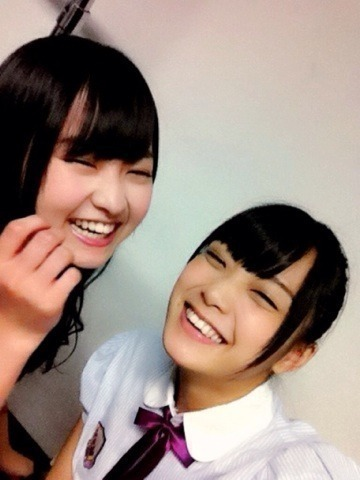
まいまいお誕生日おめでとう！
よくじゃれ合うゆるーい仲なの。
くだらない話するの楽しい♪
かまってくれるまいまいの優しさに
いつも感動してます。すきだ！
.........
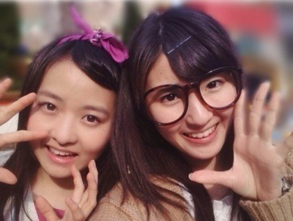
今日はさゆと夢の国へ行きました。
私は中2以来でした。
4年ぶり...
実はパンケーキ
行く約束だったんだけど
私が突然ディズニー行きたい！
って言ったらじゃあ行こう！と
2人とも方向音痴で
すっごい道間違えて無駄に歩いた泣
地図見てもわからないとか泣
これ並んで乗ったら
お昼にお肉食べよう！
っていう目標立てて
お肉食べるために頑張ってた。
楽しかった！
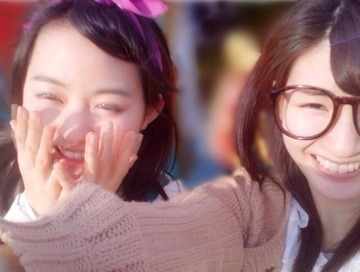
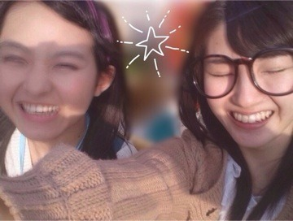
さゆありがとう♪
見にくいけど今日の格好！
全部古着〜
まりか
2014/0325Tueねんねしてシャボン 玉。558回目
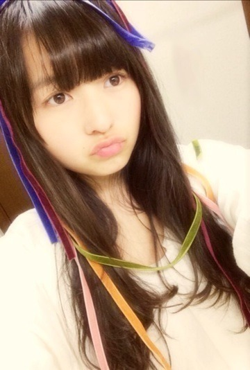
いっぱい買ったベロアのリボン
勿体無くて結局切らず使わなかった...
もう春だからベロアはしまうか...
お茶会楽しかった〜♪
でも緊張するんだよね、
話すの上手くないから
背中汗だらだらでした...
しばらく握手会もなかったからね。
乃木ここ配信されました！
あみちゃんれなりん
まいちゅんきいちゃんと
まいちゅんのこと、
一緒に横アリを振り返りました。
誰が仕込んだのかいつの間に
横アリのまりっか'17流れたのは
びっくりしましたぞ！！！！！！←
...実は横アリで歌い終わった後、
あれ？意外と歌えたかな？
と思っていたのですが
まったくだった！
あんなに声震えてて
喉からからだったとは。
確かに緊張していたけど、
あんなに顔が強張ってる自分を
初めて見ました。
ライブではいつも思いっきり
楽しんでるはずなのに！
お見苦しいかもしれませんが、
ライブ盤まりっか'17は
かなりレアなので
休憩中外に出ていた方、
ライブに来られなかった方は
ぜひ見てください...
あと、乃木ここの最後に
気づいたら片想い初披露も！
この曲だいすきで毎日聴いてる♪
乃木どこの最後に
生まれたままで踊りました。
間奏のダンスがなくて残念だったー
全握のライブ楽しみにしててねっ
ひなちゃんお誕生日おめでとう！
ひなちゃんの
趣味とか加工とかすきです。
私はラブリーなものは着ないけど
見るのがすきで、
ひなちゃんに着てほしい！
極めてほしい！
また今度展覧会行こう♪
なぞの転校生
次が最終回なのかあ...
オープニングとエンディングの映像
すごくすきだ。
本編ももちろんすきだー
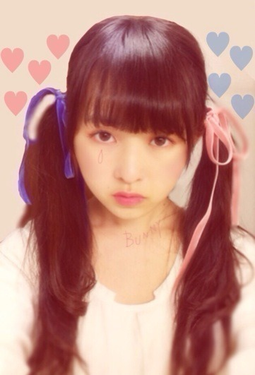
髪に結んでみたベロアちゃん、
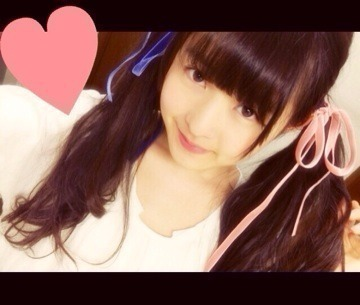
むふ。
まりか
2014/0321Friろうそく、片手にパ ソコン。557回目
たくさんのコメント
ありがとうございます。
自分のやりたいことは
最後までやり切ろうと思います！
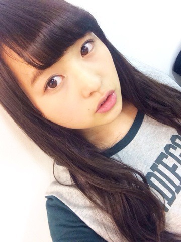
ジャズ聴きながら更新中♪
前から上原ひろみさんだいすきで
よく聴いてるけど
最近、坂道のアポロン見たんだ。
漫画も読んだ！
それにも影響された！
演奏シーンが本当に最高。
何度もリピートしてる。
サントラも聴いてるの！
ボンもセンもりっちゃんもだいすき！
ジャケ写撮影の楽屋にて
どん
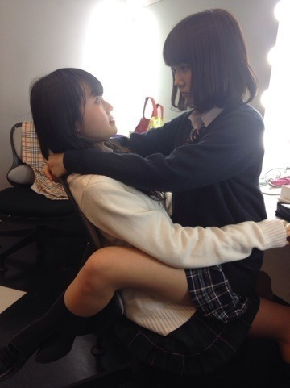
らりんがいきなり
膝の上に乗っかってきた。
(びっくりして顎がしゃくれる)
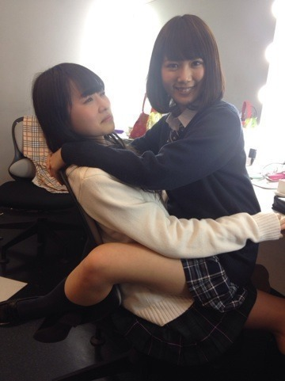
うわ、まじか
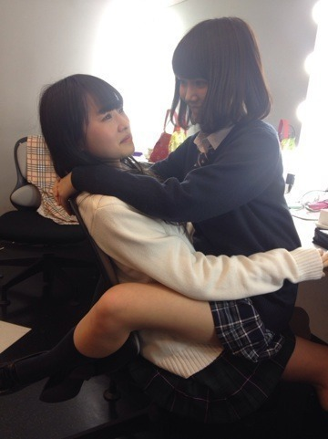
くるぞくるぞ...
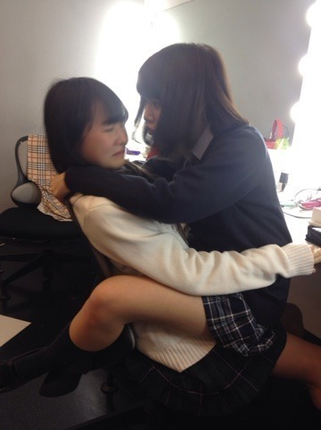
むりむりむりむりむりむりむりむりむりむりむりむりむり
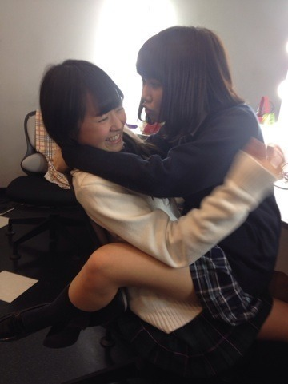
むりいいいいいいいい！！！！！！！
.........
後はご想像にお任せします。
楽屋での一コマでした
明日は7thシングル特典
スペシャルイベント
お茶会がありますよー
前回は緊張したなあ...
よ、よろしく！！
まりか
2014/0317Mon人形のパーツ。556回目
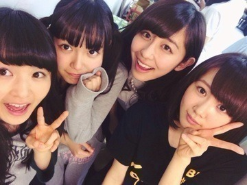
先週乃木ののは
さゆ、川後、まりっかでした！
川後とはこの前遊んだし
さゆとは今度ご飯行く予定だし
なんだか楽しかった。
さゆの兄と私の兄の共通点でいえば、
スポーツマンじゃないとこかな笑
私の兄の部屋にガチャガチャは
見当たらなかった
ロックバンドに詳しいから
さゆと話が合いそうっ
乃木のので話したとおり、
私は高校を無事卒業しました。
高1の夏に乃木坂46に合格したため
この3年は学校と乃木坂46の活動で
思い出がいっぱいです！
オーディションに合格してからも
高校は変わらず一般科に通いました。
通いながら活動できるか不安だから
このことに反対してたけど、
後悔はないです。
むしろ、親の言うとおりで...
反対していた私がバカだった
というくらい良い友達に
たくさん出会いました。
普通に接してくれて
勉強も助けてくれました。
そして、夢があって
そのために必死に頑張っていて
素の私を受け入れてくれる
一人に出会いました。
立つ舞台は違ってもこれからも
お互いを刺激し合える親友です。
その子は今海外にいます！
できる時はテレビ電話して、
近状報告し合ってるの。
私も頑張らなきゃって思える。
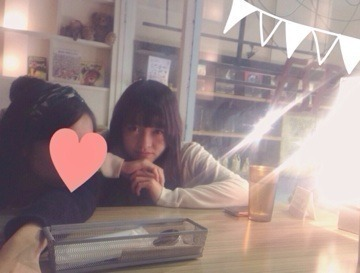
進路のことでご報告。
芸術大学に進学することになりました。
乃木坂46の活動もしながら
大好きな芸術を少しでも
学びたいと思います。
これからもよろしくお願いします！
.........
ななつんが3月22日に
乃木坂46を卒業します。
一度お話した時、
明るくて気さくな印象があります！
ダンス上手だなと密かに思ってました。
1人かけてしまうのは寂しいですが、
応援してます！
がんばれななつん！
まりか
2014/0315Sat素敵なガラクタ。555 回目
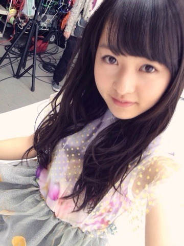
歌唱衣装。
被ってるチュールは
よく見たら星柄なんだよ。
繊細なデザインがすごいかわいい。
たくさんのコメント
ありがとうございました。
早くライブで踊りたい！
そう思ってる中またまたニュースです。
4月13日幕張メッセ全国握手会後に
楽天カード会員様限定で
アンダーライブを
行うことになりました！
詳しくは
まで！
5月にもCD特典のライブするし
プリンシパルも始まるし
なかなか忙しくなりそうです。
まだまだ寒いですね。
この前、風が少し暖かく感じたから
春の装いで外出てたら
急に寒くなって大変だったの。
早く春服着たいのになあ
今回のシングルの特典映像の
詳細が出ました！
Type-A、B エチュード
三木聡さん組です。
Type-Cは
さゆりんなーちゃんひなちま私の
4人を取り上げたドキュメンタリー。
どんな風に映ってるんだろうか。。
どちらもお楽しみに！
／
描いたり作ったりなんかしらしたら
載せてみるこーなー
＼
今回はブローチだよー
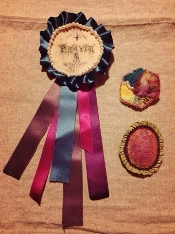
この3つ♪
オフの日にせっせと縫っていました。
自分用のため、全体的に雑
左のロゼットは初めて作った。
中心はくるみボタンじゃなくて
普通のフェルトなんだけどね。
フリルなかなか整わない、難しい。
裏は汚いから見せない♪←
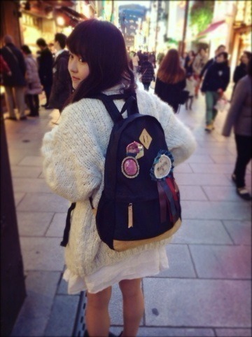
さっそくリュックに付けて
ママと中華街行ってきたーるんるん
やはり酢豚とごま団子。
あとかぼちゃのおやき食べた。
ママさん、この前
かわいい雑貨屋見つけたみたい。
キッチュ好きにはたまらん。
ガラクタの収集癖
やめられない止まらない
まりか